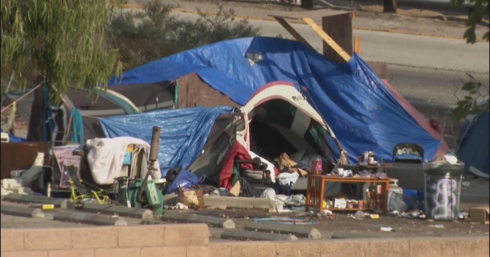

Homelessness in America reaches record level amid rising rents and end of COVID aidHomelessness in America reached a new record earlier this year partly due to a "sharp rise" in the number of people who became homeless for the first time, federal officials said Friday. More than 650,000 people experienced homelessness on a single night in January, a 12% jump from 2022, the report from the U.S. Department of Housing and Urban Development found. That's the highest number since the country began using the yearly point-in-time survey in 2007 to count the homeless population. Thousands of Americans joined the ranks of the unhoused population in the last year due to the end of pandemic programs such as the eviction moratorium as well as jumps in rental costs, the report found. The end of COVID-era aid such as the expanded Child Tax Credit, stimulus checks and other supports has also led to a an issue that was particularly acute with children, among whom the poverty rate doubled. "Homelessness is solvable and should not exist in the United States," said Secretary Marcia L. Fudge in a statement. "This data underscores the urgent need for support for proven solutions and strategies that help people quickly exit homelessness and that prevent homelessness in the first place." The number of people who became newly homeless between the federal fiscal years 2021 to 2022 jumped 25%, HUD noted in the report. The fiscal 2022 year ended in September 2022. Homelessness in America The U.S. had been making steady progress until recent years in reducing the homeless population as the government focused particularly on increasing investments to get veterans into housing. The number of homeless people dropped from about 637,000 in 2010 to about 554,000 in 2017. But the post-pandemic years have delivered a financial double-whammy that has hit vulnerable Americans particularly hard. For one, government supports that helped people weather the economic turmoil of the pandemic drew to an end, cutting off funds and protections. Secondly, rents have surged, pushing cost burdens for renters to their highest recorded level, according to the Harvard Joint Center for Housing Studies. Almost 9 in 10 low-income households with incomes below $15,000 spent more than 30% of their income on housing in 2021, the analysis found. Generally, housing is considered unaffordable if it edges higher than one-third of a household's income. How many are homeless in America? About 653,000 people were experiencing homelessness during the January snapshot. Within the overall rise, homelessness among individuals rose by nearly 11%, among veterans by 7.4% and among families with children by 15.5%. People who identify as Black make up just 13% of the U.S. population, but comprised 37% of all people experiencing homelessness. And more than a quarter of adults experiencing homelessness were over age 54. Below are the 5 states with the biggest increase in their unhoused population over the last year: - New York: 29,022 rise in people experiencing homelessness, or a 39.1% increase - Colorado: 4,042, or a 38.9% increase - Massachusetts: 3,634, or a 23.4% jump - Florida: 4,797, or a 18.5% jump - California: 9,878, or a 5.8% increase —With reporting by the Associated Press. for more features. |
 |